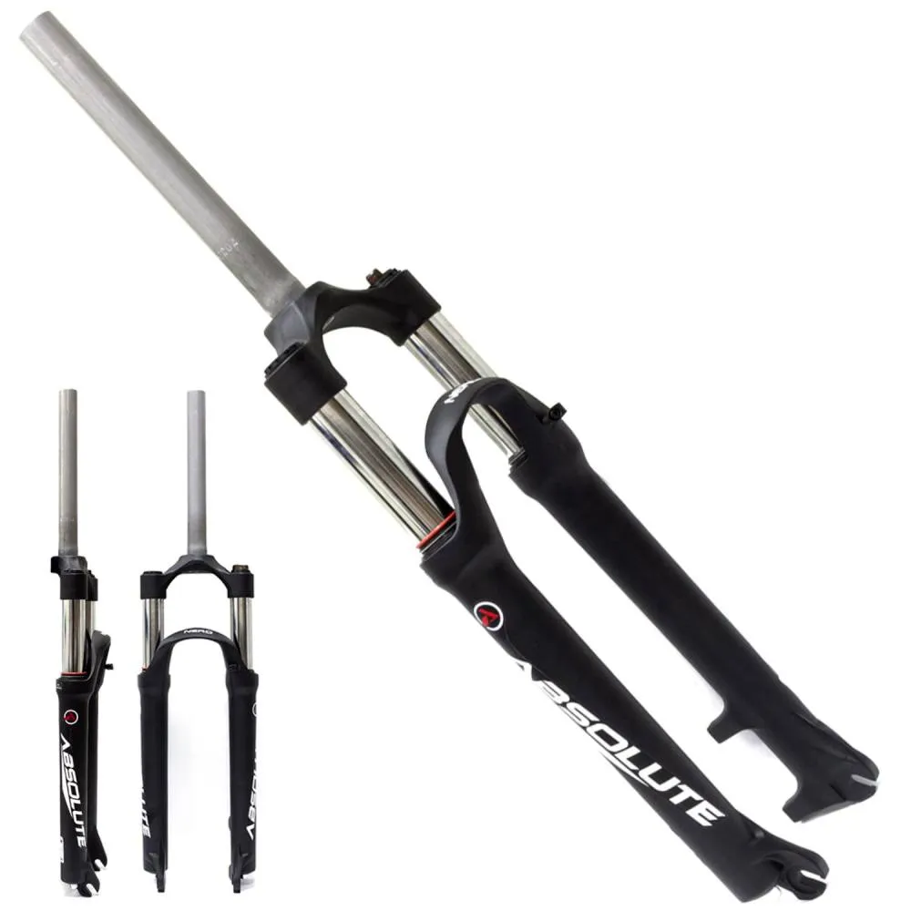
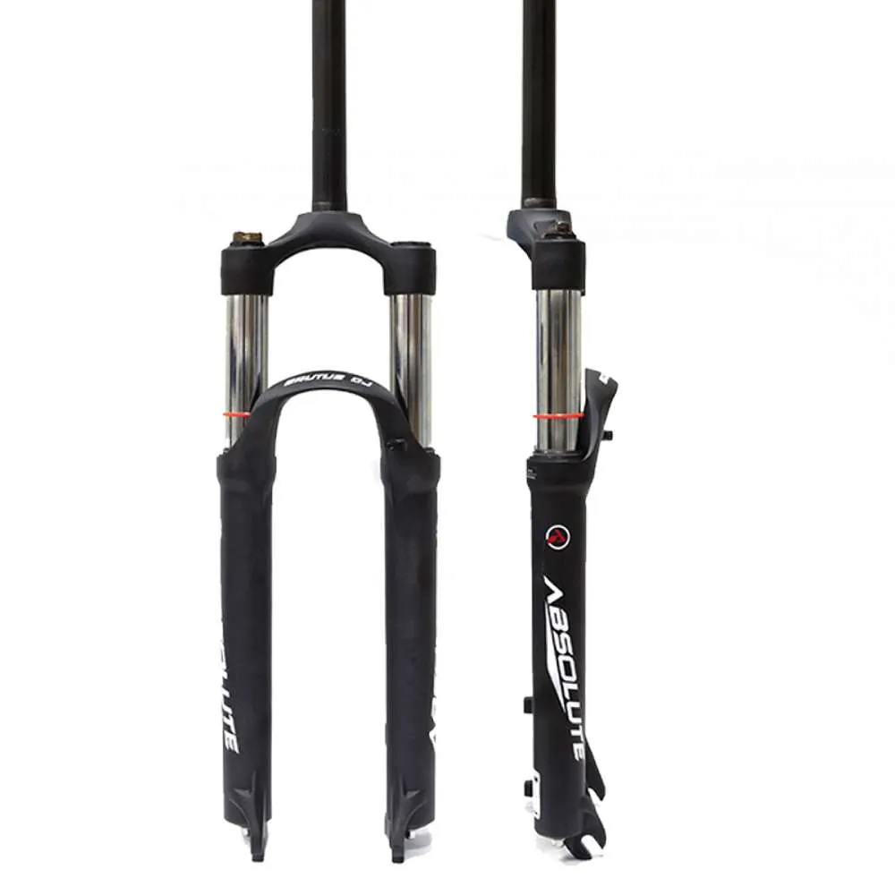
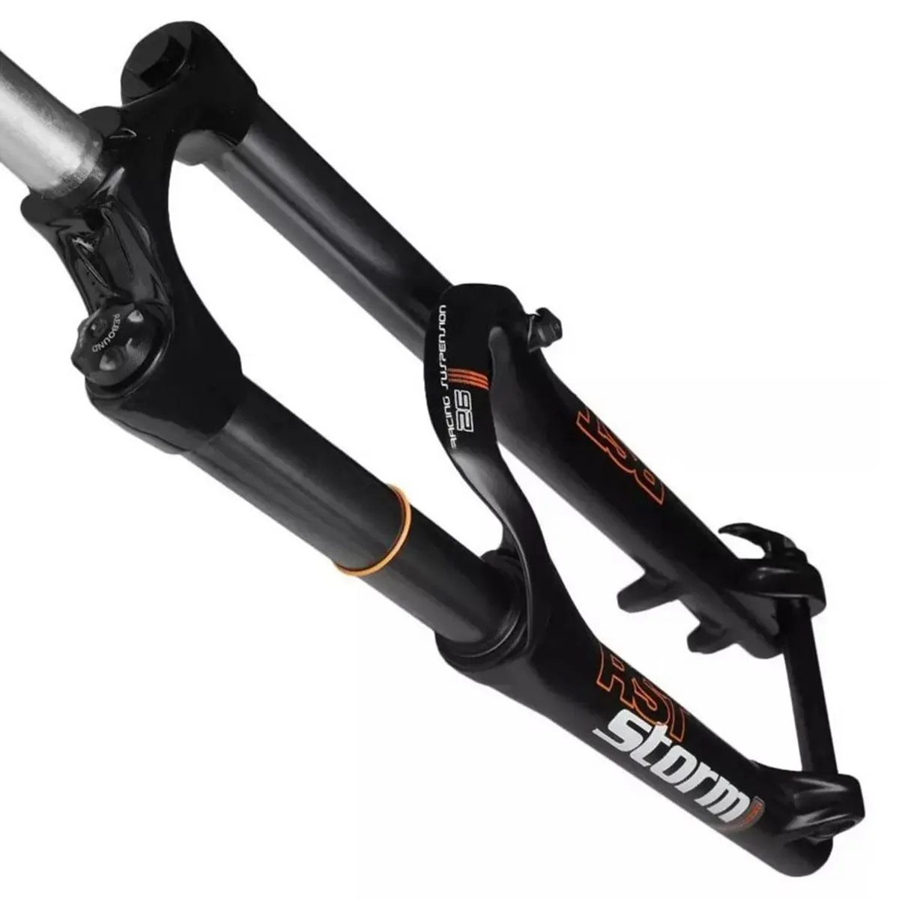
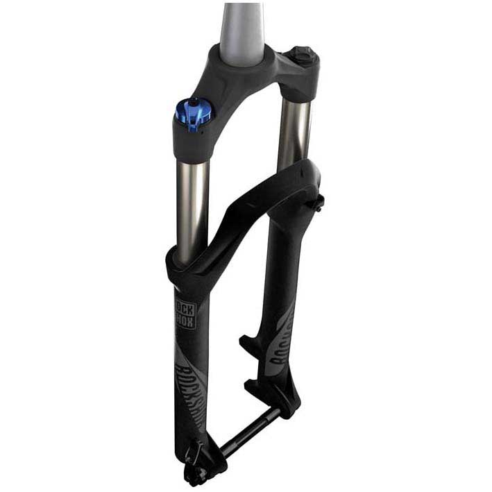
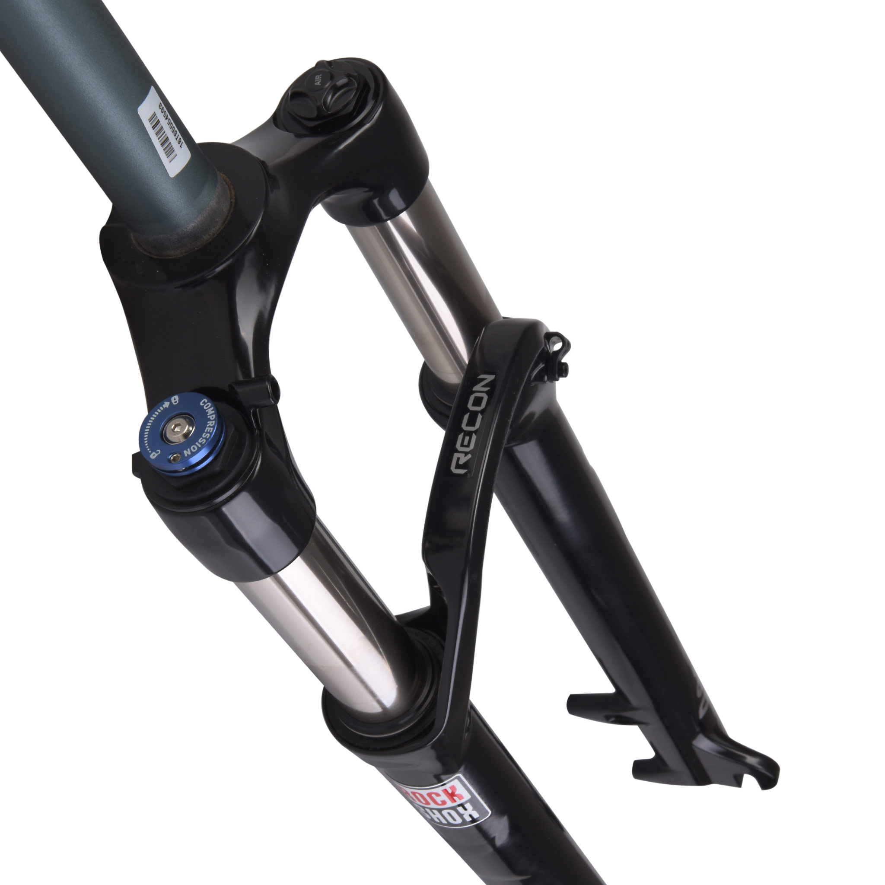

Suspenção |
| Opções | |||
|---|---|---|---|
| Absolute | Nero | ||
| Brutus FR | |||
| Storm RST | |||
| Rock Shox | Judy Silver | ||
| Recon Silver | |||

| Pontos Positivos | Pontos Negativos |
|---|---|
| Bom preço | Suporte apenas de freio a disco |
| Alta durabilidade | Manutenção mais contante |

| Pontos Positivos | Pontos Negativos |
|---|---|
| Preço moderado | Suporte apenas de freio a disco |
| Alta durabilidade |

| Pontos Positivos | Pontos Negativos |
|---|---|
| Alta durabilidade | Suporte apenas de freio a disco |
| Funcionamento impecável | Preço muito alto |

| Pontos Positivos | Pontos Negativos |
|---|---|
| Alta durabilidade | Suporte apenas de freio a disco |
| Funcionamento impecável | Preço muito alto |
| Preço exagerado pelo tamanho |

| Pontos Positivos | Pontos Negativos |
|---|---|
| Alta durabilidade | Suporte apenas de freio a disco |
| Funcionamento impecável | Preço muito alto |
| Preço exagerado pelo tamanho |